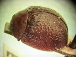
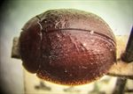
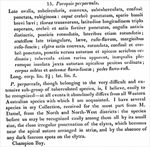

Click on images to enlarge
.jpg){kind=link}

Fig. 1. Paropsis perparvula type specimen, lateral view
.jpg){kind=link}

Fig. 2. Paropsis perparvula type specimen, dorsal view
{kind=link}

Fig. 3. Paropsis perparvula, description
Name
Paropsis perparvula Clark, 1865
Corresponds to
This is possibly Ta228, but with low confidence.
Diagnosis and Notes
Blackburn does not deal with P. perparvula (which he mistakenly attributes to Chapuis), indicating that he is confident that he has not seen the species (Blackburn, 1897, p.640). This species is possibly Ta228, which has very similarly structured dorsal surface and is similarly sized. Ta162 is another possible candidate, though tends to be slightly larger in size.
Type specimen
Location: BMNH
Label data: /“TYPE”/ “Champion Bay”/ “67-56”/ “perparvulus Clark”/ “perparvula”/.
Mounted on card, sex unknown; size: 5.1 (L) x 4.35 (W) x 2.55 (H) mm; HCE/BL ~22.2% (estimated from photo of lateral view).
Brown, verrucae are present but they are small, concolorous and inconspicuous, best developed in the area between humeral callus and scutellum; scutellum punctured; ventrally brown.
Original description
Translation of original description (Figure 3) by ChatGPT, 04/2026:
Broadly oval, almost circular, convex, slightly tuberculate, confusedly punctate, rust-coloured. Head closely punctate, with a short smooth space at the base. Thorax transverse, the width exceeding the length by three times; closely and rather strongly punctate; anterior angles distinct, posterior angles rounded, sides also rounded. Scutellum broadly triangular, smooth, reddish-yellow, with reddish-brown margins. Elytra fairly convex, rounded, confusedly and densely punctate; the punctures arranged in rows toward the suture and apex. Tubercles also present, rather sparse and unequal, mostly isolated, but clearly arranged in a row close to the apical suture. Underside and antennae yellowish-brown; legs yellowish-red. Length 2⅓ lines (~5 mm); width 2 lines (~4.25 mm).
References
Clark, H. 1865, "Descriptions of new Phytophaga from Western Australia", Transactions of the Entomological Society of London, ser. 2, vol. 2, no. 5, 401–421 (page 413).
Copyright © 2026. All rights reserved.